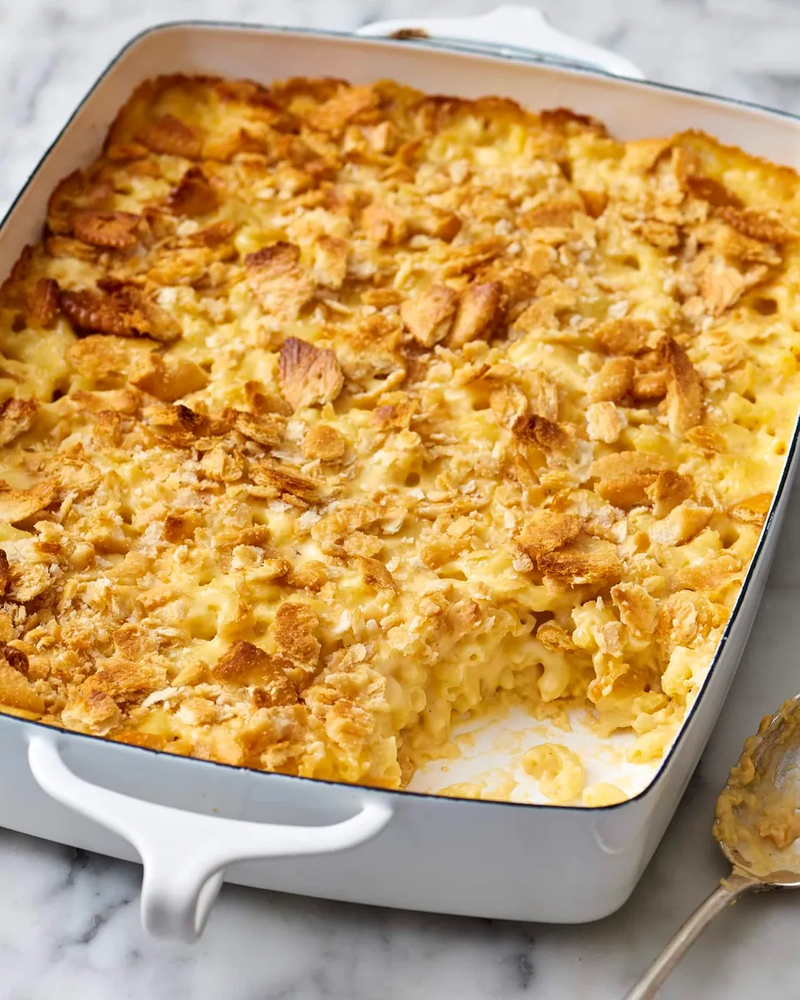

Home
Mac & Cheese

The mac and cheese recipe to rule them all. Make it for yourself!
Ingredients
- 8 oz elbows
- 16 oz shredded cheddar
- 1 can cream of mushroom soup
- 1 cup mayonnaise
- 1/2 cup milk
- 1/8 tsp onion powder
- 1 sleeve Ritz crackers
Directions
- Preheat oven to 350 degrees Fahrenheit.
- Cook the elbows.
- In a large mixing bowl, combine elbows, shredded cheddar, cream of mushroom soup, milk, mayo, and onion powder. Mix well.
- Pour the mixture into a greased 9"x13" casserole dish.
- Top with crushed Ritz crackers.
- Bake for 40 minutes.
- Enjoy!